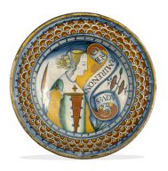

|
|
Department
of Medieval and Modern Europe > galleries
> Room
46
Europe
15th to 18th Centuries
|  |
Europe
15th to 18th Centuries
This gallery traces the
development of the Renaissance and Reformation as cultural movements
in Europe between 1400 and 1550. Medals and coins provide the historical
and political framework for the displays, which focus on technological
and artistic achievement in ceramics, glass and metalwork.
Also illustrated are key excavated artefacts the contribution of
archaeological research to the cultural, social and economic history
of Europe in its transition from the Middle Ages to industialisation.
The display of Tudor royal palaces is devoted to finds from excavations
at Whitehall and Nonsuch, two of Henry VIII's greatest architectural
achievements. Moulded stucco wall-panels from Nonsuch and earthenware
stove-tiles from Whitehall document
...more
 floor
map
floor
map
opening
hours
|
|
...the
arrival of the Continental Renaissance design and culture at the
English court during the second quarter of the 16th century.
The theme of trade and discovery, a defining feature of the the
post-medieval transition, is illustrated almost entirely by artefacts
which were once traded commodities, from Rhenish stoneware ceramics
and English cloth seals to Dutch tobacco boxes and Chinese export
porcelain. Porcelain from shipwrecks in the South China Sea or gold
and silver ingots from Spanish galleons sunk in the Caribbean form
spectacular evidence for the boom in international trade following
colonisation in the 17th and 18th centuries.
The success of the cross-Channel trade in maiolica and stoneware
from the 16th century and the long-distance supply of Chinese porcelain
a century later stimulated several attempts at native production
during the 17th century. Excavations on the site of John Dwight's
Fulham Pottery, founded in 1672, produced evidence not only
for the earliest evidence for stoneware manufacture in Britain and
but also pioneering experiments in the manufacture of Oriental-style
porcelain some four decades in advance of commercial production
in Germany.
Selections from
the Department’s rich collections of 18th century artefacts illuminate
key events and demonstrate the wealth of Europe, many parts of which
were subject to absolute rule. The British monarchy was under
threat from the House of Stuart, especially in 1715 and 1745. The
role of Parliament was evolving, particularly through the events
associated with John Wilkes MP who fought for free speech;
elections were riotous affairs. Public interest and involvement
is evident from the survival of engraved glasses, painted and printed
ceramics, ivories, enamels and tokens and medals. England, France
and Spain were continually extending their Empire, coming into conflict
in both Europe and the New World. The American War of Independence
in 1776 and the French Revolution in 1789 left both profoundly
changed. Battles, executions and even philosophical movements
and scientific discoveries have left their trace in objects displayed
in the gallery.
|
Spectacular
loans-in
The Moore jewels:
The British Museum has recently taken on loan a fascinating group
of Tudor jewellery associated with the life and legacy of Sir Thomas
More (1477/8-1535), one of the outstanding figures of the Tudor age.
The group comprises two seal-dies, a cameo with a bust of the Virgin
Mary, and two pendants. Only one item can be directly associated
with More himself: a silver seal die with his arms and crest of a
Moor’s head, which he had made to commemorate his office in Henry
VIII’s Household as Sub-Treasurer of England between 1521-24. Another
jewel made during his lifetime, which may have been his, is a gold
reliquary in the form of a cross with delicate enamelled decoration
and pendant pearls. A second reliquary pendant appears to have
been made to commemorate More, probably in the mid 1550s.
On loan from
the Society of Jesus. |
More galleries: 41
| 42 | 43 | 44
| 45 | 46 | 47 |
48

|